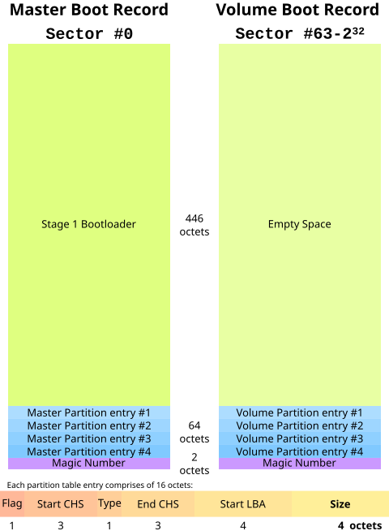

Mbr
Master Boot record
Nach dem Post lädt das BIOS in den Mbr (Master boot record) dieser bootet das Erste valide eingetragenen Bootmediums. Wenn der Mbr fehlschlägt ein Bootmedium zu booten geht er zum nächsten über. Der Mbr erhält neben der Partitonstabelle auch von den Koordinaten der bis zu 4 Primär Partionen. Außerdem enthält er auch die magic number »AA55« diese markiert den Sektor als bootbar. Mbr ist der Vorgänger von GPT.
Oftamls verfügen bootloader über die Funktionalität ein System mit einem Password zu schützen. Oder das Laden von mehreren
Betriebsystemen. Auch beim boot von einem Wechselmedium.
Bei solchen Umfangsreichen Funktionalität, passt der gesamte code eines Bootloader nicht in die dafür reservierten 512 Bytes, vorallem
da 2 Bytes für die Bootable Flag und weiter 64Bytes für die Partionstabelle verbraucht werden. Deshalb werden moderne Bootloader in zwei
Stufen realisiert, wobei die erste Stufe im Bootsektor bzw. im Mbr steht. Dadurch ist die einzige aufgabe vom Mbr, die zweite, auf der
Festplatte liegende Stufe, in den Hauptspeicher zu laden. Als Beispiel Siehe Bild
